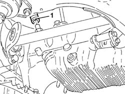
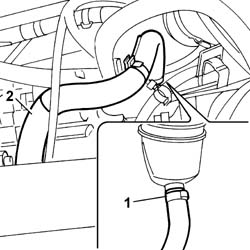

1080D30 engine oil recovery pipe - r + r
- Path
- Procedures > 10 ENGINE > 1080 EXHAUST EMISSION CONTROL SYSTEM > 1080D crankcase vapour/gas recirculation system > 1080D30 engine oil recovery pipe - r + r
- Kind
- repair procedure (removal / refitting; the operation number is the code)
- Applies to
- engines: 1.9 JTD 8v , 2.4 JTD 10v, 2.4 JTD 20v; all production periods
- Interactive page
- https://sloeber94.github.io/elrnDB-a156/en/#/3237847
Applies to: engines: 1.9 JTD 8v , 2.4 JTD 10v; all production periods
 Removing
Removing
 Refitting
Refitting1080D34 engine oil vapour separator - r + r
Position the vehicle on the lift.
Raise the car.
1. Disconnect the engine oil vapour recovery pipe from the oil sump and remove it.

Applies to: engines: 1.9 JTD 8v , 2.4 JTD 10v; all production periods
Refitting
RemovingConnect the engine oil vapour recovery pipe to the oil sump.
Lower the vehicle.
Remove the vehicle from the ramp.
Applies to: engines: 2.4 JTD 20v; all production periods
Removing
RefittingProceed with removal 7055B54 under-engine guard - r r .
1. Loosen the band and disconnect the engine oil vapour recovery pipe, separator side.
2. Open the band, disconnect the engine oil recovery pipe, crankcase sump side, and remove it.

Applies to: engines: 2.4 JTD 20v; all production periods
Refitting
RemovingRefit in its seating the engine oil recovery pipe, connect it on the crankcase sump side and tighten the band.
Connect the engine oil recovery pipe, separator side, and tighten the band.
Proceed with refitting 7055B54 under-engine guard - r r .